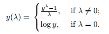
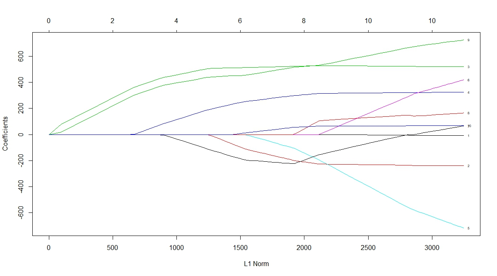

The Nature of the Feature
Sometimes, people are performing basic feature engineering without realizing that it is feature engineering. Technically speaking, z-score standardization of continuous variables is a type of feature engineering for many ML models. Another example would be extracting time elements like month, or day of the week from timestamps. In the former case, normalizing the data helps the model learn more efficiently if it is updating the the weights using gradient descend; in the latter, it is extracting additional variables from the raw data.
Speaking of data normalization, this is where having some domain knowledge can help. For an economic dataset, values are often normalized to per-capita basis, or adjusted for inflation. If you are working in the realm of public health, data like death rate at the state level is age adjusted based on that state's population. For gene expression analysis, it's common to normalize sequence data to Fragment per kilobase transcript per million mapped reads (FPKM). Aside from normalization, some dataset might also have a time lag element. For example, some studies show that infectious disease like malaria in East Africa is correlated with accumulated precipitation from the past 2-3 months.
In working with categorical variables, having many unique values for one feature can introduce undesirable 'noise' to the model. A perfect example of this is the Animal Shelter dataset from Kaggle, where the number of dog breeds listed was about 150. One approach for feature engineering was to simply map the dog breed to a more general type (Herding, Hound, Mix, Non-sporting, Sporting, etc) and also to different size groups(small-large). For the cats, the top 5 breeds actually made up 96% of population, so the other cat breeds were grouped into one category called "other". In this case, binning categorical variables helped the model to learn more effectively and made a significant difference in performance.
Checking the Assumptions
Most of the machine learning models assume a normal(ish) distribution for continuous variables, so generally speaking it's nice to have a numerical variable with a distribution that is close to normal. If your data has a somewhat skewed distribution, a logarithmic transformation would usually be adequate in yielding a normal curve. However, sometimes the distribution is SO skewed that a simple log function won't do the job, and you might need the Box Cox transformation.

This transformation tests a range of values for the hyperparameter λ (usually -3 to 3), and the optimal λ is chosen based on how closely it can approximate a normal distribution curve (when λ=0 it's log ). This function offers more flexibility than the log or exponential function.
Another thing to check is multicollinearity (a.k.a, auto-correlation). Models like Naive Bayes classifier and GLM regression assume the
predictor variables are independent of each other. If that's not the case, then the model won't work or it would be highly unstable (i.e, high variance
in the coefficients for regression). An example of multicollinearity is when you have variable X, and there's a second variable with value X^2. These variables are not
independent of each other, and having the two together would 'confuse' the model during training therefore making it unstable. A typical solution
is to drop one of the correlated variables. In Python, you can figure out which variables have multicollinearity using the function
variance_inflation_factor from statsmodels.stats.outliers_influence .
For R users, it's the VIF library. If the returned VIF value is 5-10, then it's likely there's multicollinearity[1].
It's always a good practice to resolve multicollinearity issues, especially before training on regression models.
But what if you have lots of variables to sift through? It would be impractical to manually inspect the VIF and decide which auto-correlated variables to omit.
This is where Principal Component Analysis (PCA) comes in as a remedy. In capturing the maximum variance of the data, PCA reduces the
variable dimensions into uncorrelated components, which effectively remove the effect of multicollinearity. There's a detailed explanation of how PCA
works in an old post. If working with categorical data and dummy variables,
use Multiple Correspondence Analysis (MCA) to reduce the high dimensions. For R, the MCA function
can be found in library such as FactoMineR.
Missing Data
Depending on how you want to approach missing data, it can be a type of feature engineering. I had written a blog post just on that topic alone.
Trimming the predictors
Often you might want to reduce the dimensions of the variable, especially when the number of features is greater than training sample size. As mentioned above, PCA is a good way to go, however it's difficult to interpret each derived components from PCA. Another option to reduce the high dimension of data before training is to use Lasso regression, which selects features by shrinking some of the coeffients to 0 through a L1-norm penalty. How many feature it selects depends on the hyperparameter alpha that determines how aggressive the shrinkage would be.

Fig 1. Lasso shrinkage of coefficients as a function of L1-norm (source: r-bloggers).
You might be wondering which of these two methods is better suited for your model. It depends on the research question you are trying to answer. With Lasso regression, the assumption is that few features can adequately explain the outcome variable, and those features are independent of each other. If you have correlation between two variables, Lasso will very likely drop one of them. For traditional PCA, it is not dropping the individual variables(unless it's sparse PCA), but 'summarizing' the variables into a component through linear combination. Therefore, there's no explicit assumptions with PCA transformation, and it's well suited for dataset in which you believe each of the many variables have relatively small contribution to the overall variance. Whereas using Lasso regression assumes that only a few variables have the largest impact on the outcome.
Automate new features
In the real world, you will often have data that's spread across multiple tables and are linked by a unique identifier. There's
a Python library called Featuretools that can automate
feature creations giving more options for downstream feature selection. The idea behind this concept is simple, it stacks multiple transformation
and aggregation operation (called feature primitives in the package) using data shared by different tables[2]. With this package,
you can create additional features such as Mean,Min,
Max, AvgTimeBetween,
Skew, PercentTrue, and etc for a variable of interest.
The user can also perform more than 1 level of stacking to generate more granular features. This type of methodology can be useful
in feature engineering without domain knowledge, for instance when the column names are encripted.
There's also a package called FeatureSelector for doing routine selection based on criterias like percentage of missing values, multicollinearity, feature importance, etc. It's a handy module that removes highly-correlated variables, and identifies features with zero or low importance based on a LightGBM model[3].
Engineering for better models
All of the techniques and methods mentioned above are practical implementations that can help increase the accuracy of many ML models, and potentially improve model explainability. It also goes to show that feature engineering is an art form that requires some degree of creativity. One could even argue that feature engineering is what sets a good model apart from a mediocre one, because it's easy to find open source code that shows how to train a model and return some results, but more challenging to mine the right features from the raw data.
REFERENCES
[1]Tavares III, E. Variance Inflation Factor (VIF) Explained, https://etav.github.io/python/vif_factor_python.html>
[2]Featuretools Documentation, https://docs.featuretools.com/automated_feature_engineering/afe.html
[3]Koehrsen, W. A Feature Selection Tool for Machine Learning in Python, https://towardsdatascience.com/a-feature-selection-tool-for-machine-learning-in-python-b64dd23710f0